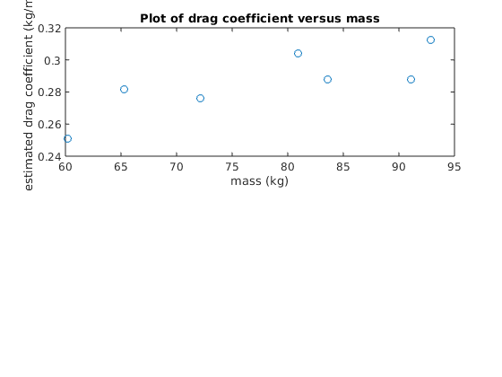

Contents
Solution
The data from Table 2.1 along with gravitational acceleration can be entered as
clear;clc m = [83.6, 60.2, 72.1, 91.1, 92.9, 65.3, 80.9]; vt = [53.4, 48.5, 50.59, 55.7, 54, 47.7, 51.1]; g = 9.81; % The drag coefficients can then be computed with Eq. (2.1). Because we are % performing element-by-element operations on vectors, we must include % periods prior to the operators: cd = g * m ./ vt .^ 2 % We can now use some of MATLAB's built-in functions to generate some % statistics for the results: cdavg = mean(cd), cdmin = min(cd), cdmax = max(cd) % Thus, the average value is % $0.2854$ % with a range from % $0.2511$ % to % $0.3125$ % kg/m. % % Now, let's start to play with these data by using Eq. (2.1) to make a % prediction of the terminal velocity based on the average drag: vpred = sqrt(g * m / cdavg) % Notices that we do not have to use periods prior to the operators in this % formula? Do you understand why? (*Answer: g and cdavg are scalars, while % m is a vector. Therefore element-by-element operation is implied*) % We can plot these values versus the actual measured terminal velocities. % We will also superimpose a line indicating exact predictions (the 1:1 % line) to help assess the results. Because we are going to eventually % generate a second plot, we employ the subplot command: subplot(2,1,1); plot(vt,vpred,'o',vt,vt); xlabel('measured'); ylabel('predicted'); title('Plot of predicted versus measured velocities'); % AS in the top plot of Fig. 2.2, because the predictions generally follow % the 1:1 line, you might initially conclude that the average drag % coefficient yields decent results. However, notice how the model tends to % underpredict the low velocities and overpredict the high. This suggests % that rather than being constant, there might be a trend in the drag % coefficients. This can be seen by plotting the estimated drag % coefficients versus mass: subplot(2,1,1); plot(m,cd,'o'); xlabel('mass (kg)'); ylabel('estimated drag coefficient (kg/m)'); title('Plot of drag coefficient versus mass'); % The resulting plot, which is the bottom graph in Fig. 2.2, suggests that % rather than being constant, the drag coefficient seems to be increasing % as the mass of the jumper increases. Based on this result, you might % coclude that your model needs to be improved. At the least, it might % motivate you to conduct further experiments wit ha larger number of % jumpers to confirm your preliminary finding. In addition, the result % might also stimulate you to go to the fluid mechanics literature and % learn more about the science of drag. As described previously in Sec. % 1.4, you would discover that the parameter % $c_{d}$ % is actually a lumped drag coefficient that along with the true drag % includes other factors such as the jumper's frontal area and air density: % % $$ c_{d} = \frac{C_{D}\rho A}{2}$$ % where % $ C_{D} =$ % a dimensionless drag coefficient, %
cd = Columns 1 through 3 0.287602575432395 0.251062599638644 0.276359827723317 Columns 4 through 6 0.288056045305545 0.312533950617284 0.281543451603971 Column 7 0.303931510678957 cdavg = 0.285869994428588 cdmin = 0.251062599638644 cdmax = 0.312533950617284 vpred = Columns 1 through 3 53.561577056316516 45.451525352327835 49.741382233145025 Columns 4 through 6 55.912563649945703 56.462236147934391 47.337662364284085 Column 7 52.689548597287427